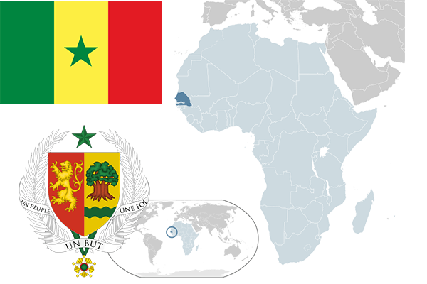

To`liq nomi: Senegal Respublikasi
Region: Gʻarbiy Afrika
Qonunchilik shakli: Respublika
Mustaqillik kuni: 4 Aprel 1960-yil
Poytaxt: Dakar
Maydoni: 196,712 km²
Chegaradosh davlatlari: Mavritaniya, Mali, Gvineya, Gvineya-Bisau, Gambiya.
Aholisi: 13 300 410 (2013-yil)
Aholi zichligi: 51 /км²
Aholining o`rtacha yoshi: 66,87 yil
Rasmiy tili: Fransuz tili
Dini: Islom
Pul birligi: G’arbiy Afrika franki
Telefon prefiksi: +221
Internet domen: .sn
Xalqaro tashkilotlarga a`zoligi: BMT
Dengiz va okeanlarga chiqishi: Atlantika okeani
YIM: Butun: $16.1 mlrd.(2017-yil) Jon boshiga: $1,019
Yirik shaharlari: Dakar, Grand Dakar, Pikine